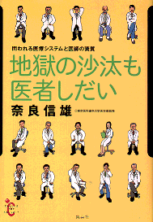
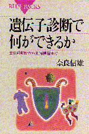

奈良 信雄（なら のぶお）
高松高校 昭和43年卒
プロフィール

1950年 高松市生まれ1968年 高松高校卒業
1975年 東京医科歯科大学医学部卒業
1975年 東京医科歯科大学医学部附属病院第一内科入局
1978年 放射線医学総合研究所
1983年 カナダ国トロント大学オンタリオ癌研究所研究員
1994年 東京医科歯科大学医学部教授
1999年 東京医科歯科大学大学院教授
専門
内科学、血液病学、臨床検査医学
奈良さんによれば、「大学では、内科医師、研究者、教育者の３足のワラジを履いて多忙を究めています。学生とダベるのが、歳を忘れて一番楽しい時間です。」とのこと・
研究テーマ
白血病細胞の増殖機構の解明
癌、感染症の遺伝子診断
著書
内科診断学（医学書院）
臨床研修イラストレイテッド（羊土社）
薬の処方ハンドブック（羊土社）
遺伝子／染色体検査学（医歯薬出版）
臨床血液学（医歯薬出版）
医学書関係その他多数

地獄の沙汰も医者しだい（集英社）
にこにこ病院読本（インターメディカル社）
名医があかす病気のたどりかた事典（講談社ソフィアブックス）
病気がわかる自己診断早わかり事典（主婦と生活社）
病気の自己診断（東京書籍）
これで分かる病院の検査（講談社ブルーバックス）
病院の検査がわかる本（講談社健康ライブラリー）
病院検査のここが知りたい（羊土社ひつじ科学ブックス）
病院の検査の意外な落し穴がわかる本（講談社ソフィアブックス）
病院の検査と検査値がわかる本（日東書院）
白血病を治すーここまで進んだガン治療（講談社ブルーバックス）
ガン検診 賢い受け方（講談社健康ライブラリー）
遺伝子診断で何ができるか（講談社ブルーバックス）
奈良さんからのメッセージ
趣味を尋ねられたら、「研究」と「本を書くこと」と答えていました。加えれば「野球観戦」です。
実際、試験管を振る生活は楽しく、新たな発見を目指してきました。
しかし、齢５０歳を過ぎると、研究は後輩に任せがちとなり、自らは試験管を振れる時間が追い詰められ、寂しい思いにかられています。
一方、執筆は楽しいものです。
自宅であろうが、旅先であろうが、通勤電車であろ
うが、パソコンを携帯して、書きまくってきました。
ところが、これも先日、電車の中でキーボードを叩く音がうるさいとのクレームが如何にもコワモテの嫌なオジサンからクレームがつきました。
野球は、かのGが金にモノを言わせているので面白くなく、さらに佐々木やイチローなどのメジャー入りで、大リーグの二軍になっている感があり、これまたツマラナイ。
こんなことで、折角の趣味がしぼんでいます。
目下は自宅でクラシックを聴くのが趣味といったところでしょうか？
最近はテレビ、ラジオ、新聞、週刊誌などにもちょくちょく顔を出しています。
今年は、何と仕事面だけでなく、自宅までTVに出てしまいました。
先日など、週刊フライデーが話しを聞きたいと申し込んで来ました。
これはマズイと逃げ腰になっていたところ、遺伝子のゲノムの特集を組みたいとの話しで、ホッとしました。
最新作の「地獄の沙汰も医者しだい」は、マスコミでも少しずつ取り上げられています。
これは、うずまく医療ミスや事故に耐えかね、いかにすれば良くなるか、身を守れるか、患者にも医者にも問題を投げかけた本です。
私の経験に基づいたもので、よい医療を目指すきっかけとなればと思って書きました。
現在のように、不信なままで病院にかかるような状況は、とても不幸です。人間だれしも健康を壊すことはあり、そんなときに安心してかかれる医療を目指すのが私の望みです。
〒113-8519 東京都文京区湯島1-5-45
東京医科歯科大学大学院医歯学総合研究科
全人診断治療学講座臨床検査医学分野
TEL 03(5803)5333 （直通）
FAX 03(3818)1424 （直通）
e-mail: nara.mlab@tmd.ac.jp